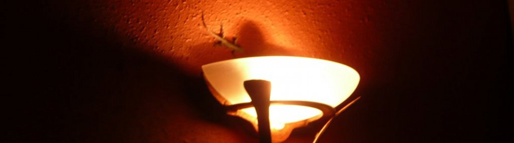

Lonce Wyse
Associate Professor
Communications and New Media Department
National University of Singapore
111 Computing Drive
Singapore, 117416
Office:
AS6 #07-03
Phone:
+65 6516 7277
E-mail: lonce.wyse@nus.edu.sg
CV
Publications
(citations)
Editorial Boards:
Computer Music Journal (MIT Press),
Organized Sound (Cambridge University Press)
Research
(see Publications)
Real-time collaborative musical notation
Interactive sound and media design systems
Deep Learning and Sound
Phase Reconstruction from Spectrograms
Teaching
My new on-line Kadenze course, Web Coding Fundamentals for Artists
NM3238, Software Studies
NM4224, Sound and Interaction
NM5209, New Media Art
NM2207, Computational Media Literacy
NM1101, Communications, New Media, and Society
GS6887A, Sound, Music, and Mind
The Arts and Creativity Lab at IDMI
A'n'C Website
Various projects
Art/Science Residency Program
Software
jsaSound - library of interactive sound models for the web - securely served for you microphonal enjoyment.
Anticipatory Score - Multi-user real-time musical notation and synthesis
Divertissements including
Systems of multiple 3D Lorenz equations
- Uncoupled, "Classic"
- Symmetrically coupled, "Periodic catastophe"
- Assymmetric coupling, "The Temptations"
- "Swimmers"
Following Casey Reas following Sol LeWitt
Moire and Risset Beats patters complementing each other.
Software (Code)
My Github repositories
Helpful code snippets for web hacking
Artwork
(see my CV)